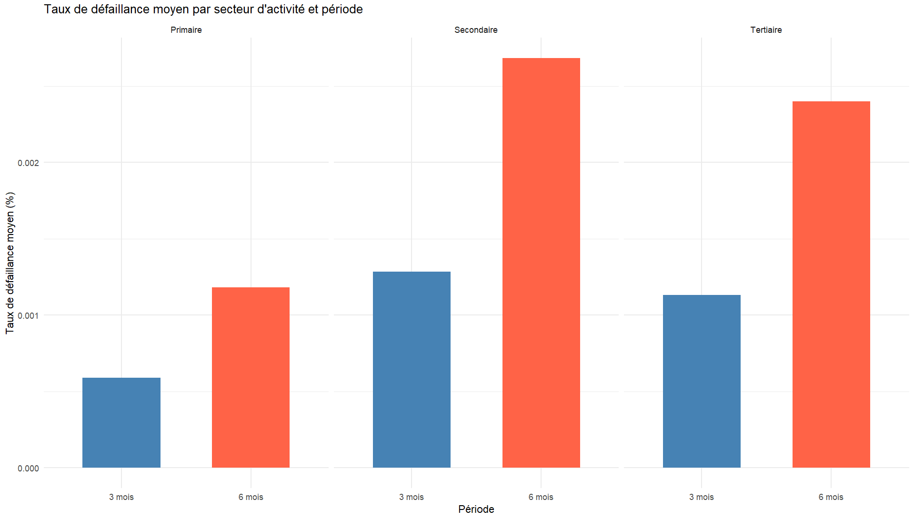

Etude relationelle du taux de défaillance
Lien interactif
Base de données
Visualisation exploratoire
Regression avec intéraction
Rapport de corrélation
Régression taux de défaillance
Analyse des défaillances d’entreprise
Découvrez un site interactif permettant d’explorer les tendances et les dynamiques des défaillances d’entreprise au fil du temps.
Base de données
Variables principales :
-
Défaillance des entreprises :
- Taux à 3 mois et 6 mois.
-
Segmentation des entreprises selon la taille :
- GE (200+ salariés)
- ETI (50-200)
- PME (10-50)
- TPE (3-10)
- Secteurs d’activité inclus (cf code NACE ci-dessous).
-
Émissions de gaz à effet de serre (GES) :
- Six gaz pris en compte : CH₄, CO₂, PFC, … (Protocole de Kyoto, 1997).
- Données exprimées en équivalents carbone pour éviter les biais.
-
Conjoncture économique :
- Variables intégrées : PIB, taux d’intérêt, taux de change, indicateurs de confiance (ménages/entreprises), etc.
-
Catastrophes naturelles :
- Variables relatives aux événements majeurs : tempêtes, inondations, séismes, canicules, …
-
Temporalité :
- Données agrégées trimestriellement, choix retenu pour sa pertinence vis-à-vis du taux de défaillance à 3 mois.
- Variables Latentes : Conjoncture économique, GES et Catastrophes naturelles (cliquez ici pour l’analyse)
Visualisation exploratoire
Histogramme des 3 secteurs par taux de défaillance 3 mois et 6 mois

Nous pouvons constater que le secteur secondaire présente le taux de défaillance le plus élevé sur les périodes de 3 et 6 mois. Cette tendance peut s’expliquer par des facteurs tels que la concurrence plus forte, les coûts de production élevés et la sensibilité aux fluctuations économiques tels que la crise du COVID et le début de la guerre en Ukraine, rendant les entreprises de ce secteur particulièrement vulnérables aux difficultés financières.
Répartition des Taux de Défaillance sur 3 Mois par Secteur d’Activité (14 Secteurs)
Trois secteurs se démarquent particulièrement : Transports et entreposage, Construction, et Hébergement et restauration. Cette observation est cohérente, car ces secteurs ont été fortement impactés, notamment durant la crise du COVID-19, ce qui a pu fortement joué sur la défaillance de ces entreprises
Régression avec interaction
Analyse des défaillances selon la taille et le secteur :
-
Comparaison avec les GE et le secteur de la construction :
- Les PME et TPE montrent des taux de défaillance significativement plus élevés dans plusieurs secteurs.
-
Secteurs les plus vulnérables pour les PME et TPE :
- Activités financières et d’assurance (K) : Forte dépendance à la conjoncture économique.
- Commerce et réparation d’automobiles (G) : Forte intensité concurrentielle.
- Services administratifs et de soutien (N) : Haute vulnérabilité en raison de l’environnement concurrentiel.
-
Secteurs plus résilients pour les petites entreprises :
- Industrie manufacturière (C) et Transport et entreposage (H) : Moins influencés par la taille des entreprises.
-
Analyse quantile :
- Les TPE et PME sont particulièrement vulnérables aux défaillances en situations extrêmes.
- Les grandes entreprises, protégées par l’effet “too big to fail”, bénéficient de mécanismes de soutien inexistants pour les petites structures.
Rapport de corrélation
Code NACE - Secteurs d’activité
- A : Agriculture, sylviculture et pêche
- C : Industrie manufacturière
- D : Production et distribution d’électricité, de gaz, de vapeur et d’air conditionné
- E : Production et distribution d’eau, assainissement, gestion des déchets et dépollution
- F : Construction
- G : Commerce, réparation d’automobiles et de motocycles
- H : Transport et entreposage
- I : Hébergement et restauration
- J : Information et communication
- K : Activités financières et d’assurance
- L : Activités immobilières
- M : Activités spécialisées, scientifiques et techniques
- N : Activités de services administratifs et de soutien
- Q : Santé humaine et action sociale
Synthèse des rapports de corrélation des taux de défaillance par secteur
x : non valide (Hypothèse H0 non validée)
o : valide (Hypothèse H0 validée)
- En vert : les secteurs dont le rapport de corrélation est le plus fort (3 meilleurs)
- En rouge : les secteurs dont le rapport de corrélation est le plus faible (3 pires)
En raison du non-respect des hypothèses de normalité, nous avons utilisé le test de Kruskal-Wallis comme alternative au test de Fisher. Les résultats indiquent l’existence de différences statistiquement significatives entre les groupes analysés, avec une faible probabilité que ces différences soient dues au hasard (seuil de 5 % pour la majorité des secteurs et de 1 % pour les secteurs D et N). Par ailleurs, bien que les hypothèses de normalité ne soient pas respectées, cela n’empêche pas l’analyse des corrélations entre les variables étudiées. Nous observons que le secteur C (Industrie manufacturière) présente le rapport de corrélation le plus élevé (29 %), tandis que le secteur D (Production et distribution d’électricité, de gaz, de vapeur et d’air conditionné) montre le plus faible (3 %). Ces résultats suggèrent que la taille des entreprises a une influence significative sur le taux de défaillance dans le secteur (C), tandis qu’elle joue un rôle marginal dans le secteur (D).
Moyenne de rang entre taille d’entreprise et taux de défaillance par secteur
- En vert : la taille d’entreprise la moins défaillante (pour 3 mois) (en fonction de la moyenne de rang)
- En rouge : la taille d’entreprise la plus défaillante (pour 3 mois) (en fonction de la moyenne de rang)
Régression du taux de défaillance GE / Conjoncture
Taux de défaillance par Taille d’entreprise
- TPE & PME : On observe une interdépendance notable de leurs taux de défaillance.
- ETI : Résultats plus variables selon les secteurs, mais globalement plus résilientes que les petites entreprises grâce à leur taille intermédiaire et à une meilleure gestion des risques.
- GE : On observe plus un taux de défaillance relativement indépendants de ceux des autres structures.
L’importance de la taille de l’entreprise est un facteur déterminant pour sa vulnérabilité ou sa résilience face aux risques économiques. Les petites structures sont plus fragiles, tandis que les grandes entreprises sont mieux préparées à gérer ces risques.
Lexique :
- TPE : Très Petites Entreprises
- PME : Petites et Moyennes Entreprises
- ETI : Entreprises de Taille Intermédiaire
- GE : Grandes Entreprises
Régression du taux de défaillance GE sur variable conjoncturelle
- Défaillance des TPE : La défaillance des TPE influence directement celle des grandes.
- Indice des prix des matières première : Impact négatif modéré, suggère une pression sur les marges.
- Confiance des ménages : Baisse de la demande augmentant le risque de défaillance.
- Facteurs conjoncturels positifs: Confiance des ménages, rémunération des salariés.
- Gestion proactive : Nécessaire pour anticiper les risques et stabiliser les finances.
Face aux défis économiques, les grandes entreprises doivent non seulement gérer les pressions externes, comme la fragilité des petites structures et la baisse de la demande, mais aussi capitaliser sur leurs ressources internes et leur résilience organisationnelle pour renforcer leur compétitivité et assurer leur pérennité
Lexique :
- Jaune : Significatif au seuil de 10%
- Vert : Significatif au seuil de 1 et 5%